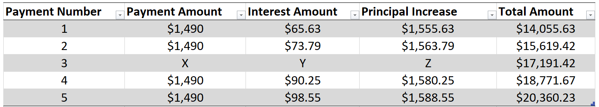

Throughout life, you will be faced with many challenges, such as rent, education and worst of all, children, if you're unlucky enough to have them.
The game you are about to emback on shouldn't be taken lightly, and everything is this may or may not happen to you in the real world.
Mind you, this is supposed to be fun, so just click on that little button down there and we can get started.
Yep, so it's just there.
We don't have all day... Hurry Up!
Death Trap... I mean Life Challenge One - Opening a Bank Account
Bank – Wacpak Interest Rate - 5.0%
Compounding weekly
Bank – Call Back Interest Rate - 6.9% Compounding weekly
Bank – ABZ Interest Rate - 4.1% Compounding weekly
Bank - Take Interest Rate - 4.5% Compounding weekly
As a child, you see all sorts of things that you don't understand. One of these is
banks. These sneaky little death traps are really shady and attention should be payed towards them.
However, you have reached that age (in this case, 16) where you need to keep a place
for the money that you don't spend on toys and lollies.
The above cards show 4 different types of banks, each with their own names and interest rates.
As you start to grow up, you notice that not everything is the best it can be. Banks are a
perfect example. Every bank has different interest rates and lots of sneaky little traps that could
make you worse off. That's why you should try and think about the choices you're about to make.
As a 16-year-old, you get weekly payments of $361.16. You want to put this in a bank to save for your first car.
The car you're looking at buying is going to cost $24,000, which isn't a lot of money for a car.
Now, because you're still with your parents, all the money from those payments are going in the bank every week.
Not only that, you already have $6,000 saved up.
The balance of your account, in dollars, after n weeks, Vn, can be modelled by the recurrence relation
shown below.
V0 = 6000, Vn+1 = rVn + 361.16
Use your knowledge of Further Mathematics terminology to answer the
following questions in order to "grow up".
How much are the weekly payments, in dollars?:
How much did you plan to invest to begin with?:
After how many months will the balance first be doubled with each bank?: (Each value separated by a space: 1 2 3)?:
In dollars, what would the balance of the account be after 1 year with Take?:
Now, with this information, which bank is the best for your needs?:
Select the bank:
...
Life Challenge Two - Buying a House
Last week, you had your 25th birthday. To many, this is an important milestone, however, you are still
living with your parents, which is a really bad thing at your age. Due to the haggling of your mates, you decided, on your better
judgement, to buy a house. The house you're looking at getting is right in the heart of Melbourne,
a thriving metropolis in the south of Bogan Land (a.k.a Australia). However, this house is very expensive, with the
price set at $560,000. To help soften the blow to your budget, the bank is offering a loan of $540,000, leaving you $20,000 out of pocket.
Lucky your account is ripe with money. You've taken the offer and leaving high and dry in your 2-bedroom home.
Now, hang on! You still have to pay the bank! The bank had offered you two types of loans: an interest only loan, and a compounding loan, that compounds monthly. You are to answer the following questions to figure
out what loan is the best for your needs. Should you choose the compounding loan, you arranged to have the loan fully paid off in 24 years. The loan has an interest rate of
4.7% per annum, compounding monthly. You are willing to put forward $12,000 to begin with and will pay $3060.12 at the end of the month (which leaves $67.64 a month for food, water and clothes: poor planning, I know).
The first two questions are working out the interest only loan.
After 3 years, what is the balance of the loan, in dollars?:
Which of the following recurrence relations correctly models the interest only loan?:
How much will the last payment be if you want it fully paid off at the end of the 24th year, in dollars?:
After 5 years, the bank has changed the interest rate (sadly, upwards) to 5.1%.
Given that the payments stay the same, after how many months will it take to fully pay it off?:
If you kept the payments and time to pay it off the same, how much would still be left after the last payment, in dollars?:
What would the new monthly payments be if you still want the loan to be fully paid off in the same amount of time?:
Life Challenge Three - The Real Price of Owning a Car
As you see below, the Jazz has given you over 20 long years of service. Sadly though, all good things must come to an end.
Everything in life gets to that stage where it isn't worth what it was 5 or so years ago. This does not include houses, some cars, some toys...
Actually... It's probably easier to say that only a few things go up in price the older it is. Anyway, over time, your car has
slowly lost its value. With every chipped bumper and "I think I'm going to hit that cat" tyre screech that we all know, the humble Jazz
has gone down and down in price until ... well, let's find out, shall we?
Jazz Depreciation Numbers
Luckly for you, that isn't your car, although yours isn't much better. When you first bought your car 20 years ago
(remember the first life challenge), it cost $24,000. You've worked out that for every kilometre you drive with it lowers its value
by 3 cents. When you last check the odometer, you were able to figure out how many kilometres you did in total, which
was about 300,000. Using this, you created this recurrence relation, but some of the values are missing.
V0 = 24,000 Vn+1 = Vn - x
These first questions are for the Depreciation questions.
...
Using the information gained in the last question,
How much is the Jazz worth, in dollars (n = 20)?
Next year, the rate at which the Jazz will depreciate will increase to 5 cents per kilometre.
Awesome work! You were able to figure out why no one buys a Jazz. Don't take it personally. We were all teenages at one point.
This life challenge was quite difficult, but more is to come. The next room tackles annuities and the problems that come with withdrawing money
Life Challenge Four - Annuities
Annuities. What are they?
You made it past half way. You're nearing the eternal darkness, comforting and brooding. But before you can find peace, you need to endure the living dead; Bank Accountants.
This time though, you want to open an annuity. In an annuity, you put in a large sum of money, and every month, you take some of that money out. The
money earns interest, so you end up with more money in the long run.

Above is a amortisation table. These are used to show investments over a short period of time. They include payment amounts and interest paid.
Your bank has sent you this one but some of the values are missing. You're to find these missing numbers and send them back with some other information.
You can't remember setting up the account so you have to start from the start. The only thing you do remember was the amount you put in ($12,500) and that the payments and rate it compounds at
happens every month.
Good luck!
You can use your CAS calculator to find the values if you need to.
When you have the numbers you need, input them below; left to right separated by a space.
In 10 years, you plan to start taking money out of it. Using the previous values, answer the following questions.
...
Life Challenge 5 - Your Last Gift
You are getting to the age where everything seems to slow down. Where everything looks innocent and sweet.
With this epiphany comes generosity. You've decided to give your last gift to the world in the form of a perpetuity.
This will fund an award that gives grants every year to young, talented and hard-done-by astronomers wishing to study further.
Before you can do that, you need to figure out how much money you are going to put forward. Based on the fact that you're 69 years old,
you are earning about $72,967.27 a year. You've saved up $1.4 million dollars and are putting that forward as well.
The Nitty Gritty
You're going to wait another 2 years before you set it up. The bank you're going with has guaranteed an interest rate of 8.4%.
Given that you have the same income and the amount in the bank doesn't increase, answer the following questions.